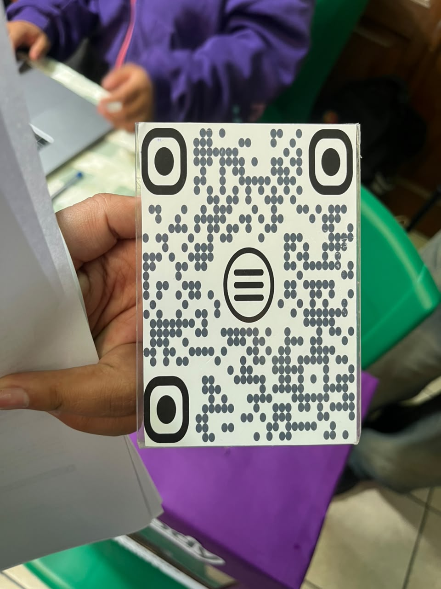

FEXPO ITSEC 2026 - ¡Bienvenidos!
En la FEXPO ITSEC Sucre se presentan diferentes emprendimientos que comparten sus ideas y proyectos con la comunidad. Entre ellos se encuentra MELODY, una escuela de canto dedicada a ayudar a las personas a desarrollar sus habilidades vocales y musicales.

MELODY es un emprendimiento educativo enfocado en la enseñanza del canto y el desarrollo de las habilidades vocales. Su propósito es brindar orientación a las personas que desean aprender a cantar, mejorar su voz y desenvolverse con mayor seguridad al interpretar diferentes canciones.
La escuela trabaja en aspectos importantes como la vocalización, la afinación, la respiración y el control del tono de voz. Estas prácticas ayudan a los estudiantes a conocer mejor sus capacidades vocales y a mejorar progresivamente su interpretación musical.
MELODY está dirigido a personas interesadas en aprender canto, tanto a quienes están comenzando como a quienes desean fortalecer sus habilidades. Mediante la práctica y la orientación vocal, los estudiantes pueden desarrollar su confianza y expresividad al cantar.
Este emprendimiento cuenta con aproximadamente dos años de funcionamiento, durante los cuales ha trabajado para promover el aprendizaje musical y ofrecer una oportunidad a quienes desean descubrir y desarrollar su talento para el canto.
Para promocionar sus servicios y llegar a más personas, MELODY utiliza diferentes redes sociales, como TikTok, Instagram y Facebook. También emplea WhatsApp para facilitar la comunicación, responder consultas y brindar información sobre sus clases.
La participación de MELODY en la FEXPO ITSEC permite dar a conocer su propuesta educativa, promocionar sus servicios y demostrar cómo un emprendimiento relacionado con la música puede contribuir al desarrollo del talento y la expresión artística de las personas.